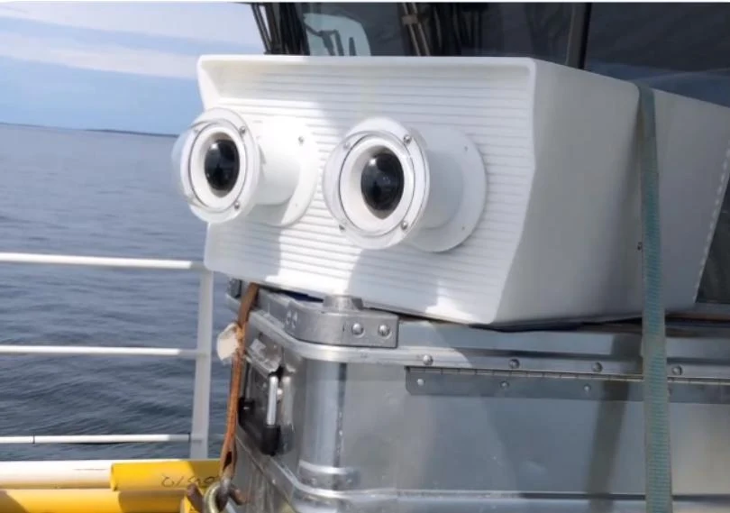
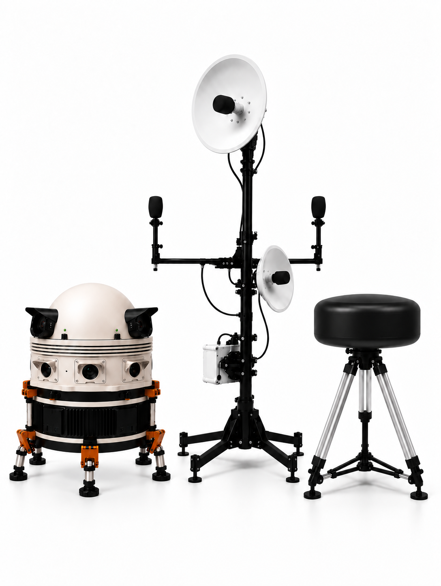

Maritime observation
Vessel-mounted optical hardware and onboard processing provide practical experience with recording, mounting, changing illumination, and water clutter.
Explore fieldworkProjects / fieldwork & development
Explore our field hardware, recorded model examples, and ongoing sensing development. Each tells a different part of the engineering story.

Vessel-mounted optical hardware and onboard processing provide practical experience with recording, mounting, changing illumination, and water clutter.
Explore fieldwork
Recorded examples show object models and tracking methods in aerial, marine, and small-point scenes. Source and model context accompany the demonstrations.
Explore the demonstrations
Visual, infrared, acoustic, and partner radar configurations extend the observation approach. Network and integration work is evaluated through project-specific pilots.
Explore Tier 3 with radarPartnerships
We work with teams who bring a real observation problem, a complementary technology, or a place to evaluate a system.
Defense, infrastructure, and field operators with a defined observation task and representative conditions.
Discuss a pilotHardware, radar, acoustic, and software partners who can contribute to a connected observation system.
Partner with usResearchers working on biological observation, unusual events, or the interpretation of sensing data.
Join our project